Estimates a camera's roll and pitch from the waterline visible in a single image, then checks every
estimate against ground truth from the MaSTr1325 maritime dataset (1,325 images). I built it to find
out how reliably a camera alone can supply attitude information for an autonomous surface vessel.
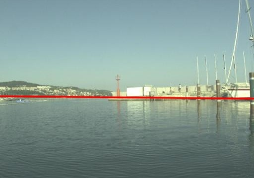
Confident pass (frame 0135, confidence 0.97). The detected line sits on the waterline across the harbor.
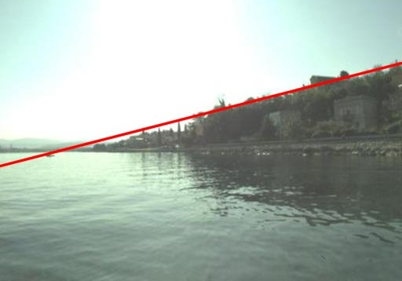
Low-confidence pass (frame 0029, confidence 0.75, right at the threshold). Land hides most of the horizon, so the line follows the shoreline and the estimate is less reliable.
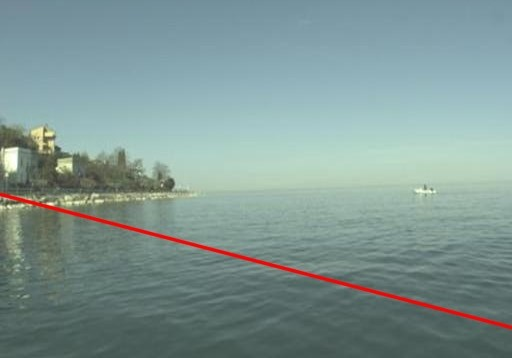
Rejected (frame 0022, confidence 0.44). Too few image strips agree on one line, so the frame is thrown out instead of trusted.
Method: vertical Sobel gradients on a grid of image strips, a RANSAC line fit across the strips, and a confidence score equal to the fraction of strips that agree. Roll comes from the line's slope and pitch from its offset under an assumed pinhole camera model.
Results: 665 of 1,325 frames pass the confidence test. On those frames the median error is 0.78° in roll and 0.83° in pitch. The other half are rejected, and the write-up shows exactly where it fails: cluttered coastlines, nearby boats, wakes, and glare.
A bias I found and fixed: on coastal scenes the strongest edge was often the skyline, not the waterline, which gave a systematic pitch bias of about -4.8°. Selecting the lowest strong edge cut it to about -0.8°. I tuned that on one third of the data and validated it on the other 883 images.
Conclusion: a camera alone is not enough. Confidence does not guarantee accuracy, and about half the frames give no usable estimate. The write-up proposes fusing it with an IMU. That fusion is proposed, not implemented.
Limits: still images only, assumed (not calibrated) camera parameters, and daytime coastal conditions.
Python
OpenCV
RANSAC
scikit-learn
Sensor fusion (proposed)
Sensor Fusion Pipeline for a Biomechanics Study
Research Assistant · Neuromuscular Biomechanics Lab · Nov 2025 – present
A cadaver-based study compares a spray-on foam support against a baseline and the currently used splint.
I am the sole engineer on the data side and built the Python pipeline that turns raw IMU
recordings into usable bone motion.
Pipeline overview (diagram; no specimen images).
Detects impact timing from acceleration spikes and aligns three IMUs to a femur-based world frame using quaternion rotations.
Evaluating several filtering approaches, including an Extended Kalman Filter, to separate true bone motion from soft tissue artifact.
A lesson in checking AI output: my first AI-assisted version produced accelerations over 1000% of the raw data. I checked expected values with the PhD researcher I work under, then traced the cause with the AI: it had treated the two IMUs on either side of the fracture as a lever arm. Removing that stage brought results back to a realistic range.
Python
NumPy
SciPy
Matplotlib
Quaternions
Sensor fusion
ARTS: Automated Reminder and Tracking System
ME 2900 Arduino prototype · Fall 2025
I constantly lose my keys and live in a house with 24 other people, so I built a system that alerts me
when I return to my room without them.
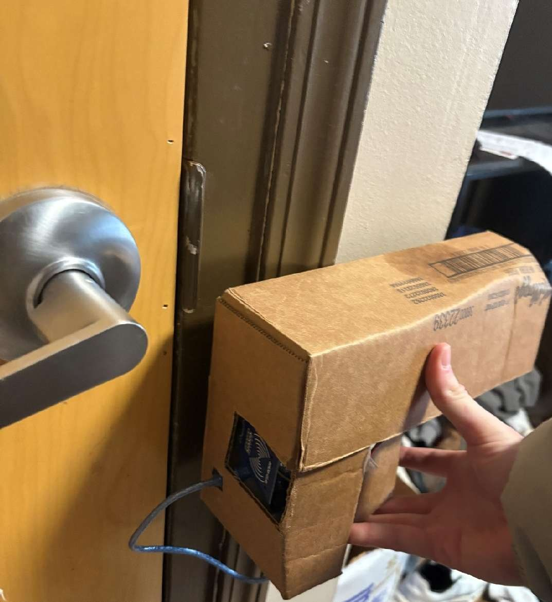
Final prototype mounted at the door.
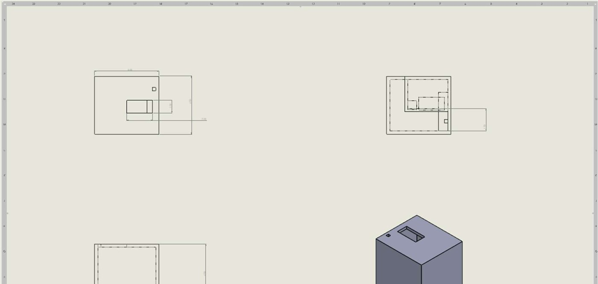
Housing drawing.
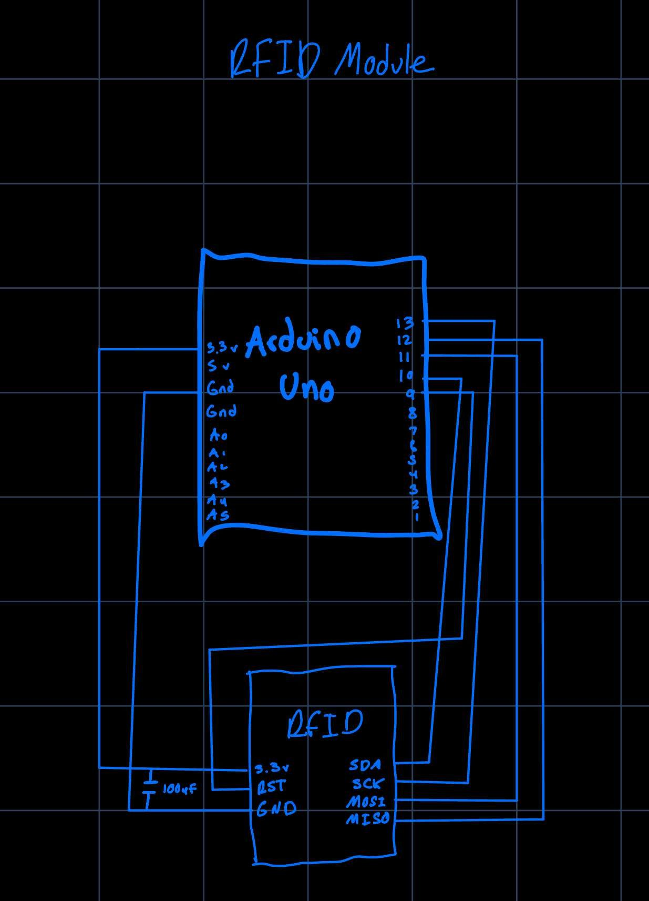
Wiring diagram for the RFID module (one of four I drew).
An Arduino reads a door magnetic contact switch, an RFID reader (key fob or card), a real-time clock, and drives an LCD and buzzer.
When the door opens and the item is marked as out, a 10-second scan window starts; if the fob is not scanned, the LCD alerts and the buzzer sounds.
Design iteration: the first version alarmed on every exit, which turned out to be annoying and did not solve the real problem. I redesigned the logic to alarm only when returning without the item.
Debugging: the RFID reader was the hardest part. Unreliable reads traced to power and wiring problems, fixed with rewiring and slower SPI timing. I used AI to help work through the read-range issue and documented it in my report.
Next steps I identified: a Wi-Fi module for phone alerts, a motion detector to confirm entering versus leaving, and a longer-range reader.
Arduino
RFID (MFRC522)
SPI / I2C
LCD
Debugging
Heated Back Brace
Freshman team design project · Spring 2025 · team of 4
A team project to build an adjustable back brace with a user-controlled heating pad for people with
chronic lower back pain, driven by user interviews and a Pugh-style comparison of concepts.
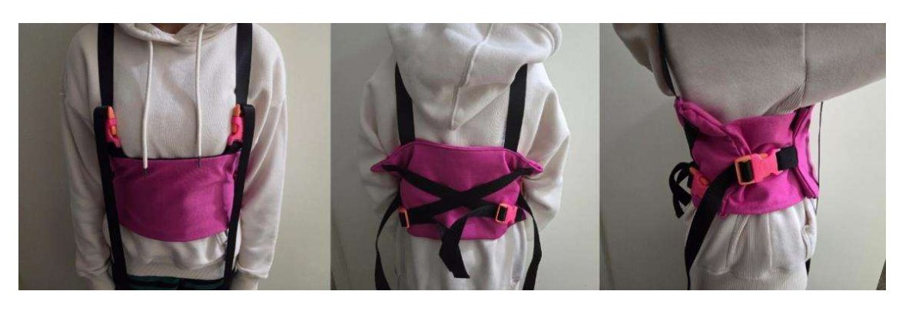
The final prototype, three views.
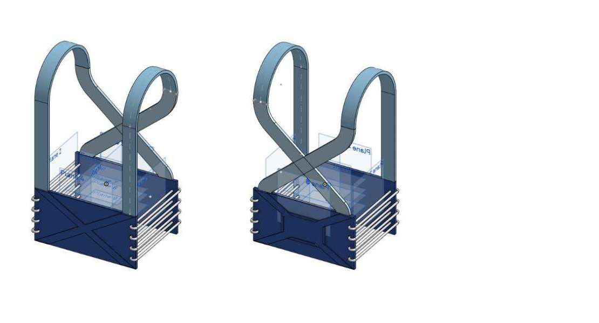
Preliminary CAD concept.
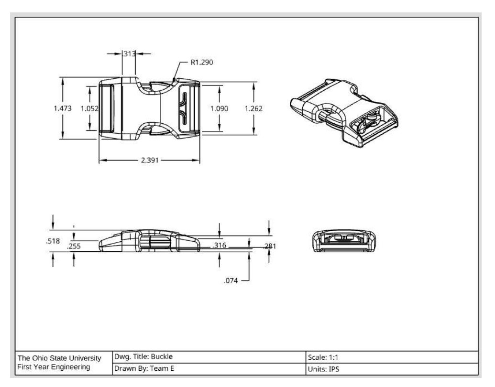
Buckle part drawing from the team's drawing packet.
The heating pad uses coiled Constantan resistance wire in silicone tubing, wrapped in fire-resistant linen, powered by a battery and an Arduino.
The buckles were 3D printed so the brace is adjustable and quick to put on.
My role: I produced the Onshape working drawing packet and the PERT schedule for the final prototype.
What we cut: the final prototype is heating only. With limited time and budget we dropped cooling and temperature regulation, which the report lists as the top next steps.
Onshape
Project scheduling
Prototyping
Arduino
3D printing
Flood-Damaged Jeep Restoration
Personal project · 2020 – 2023
My first car, restored with my father after flood damage.
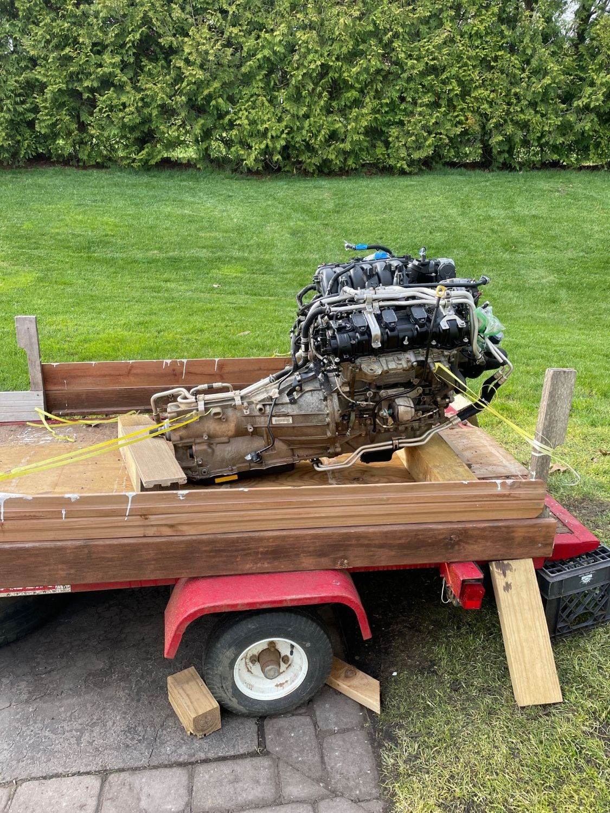
Engine and transmission ready for the swap.
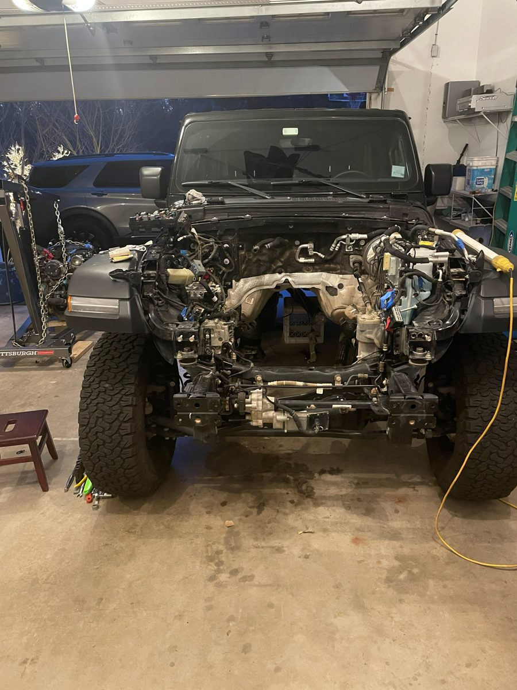
Front end with the engine bay open.
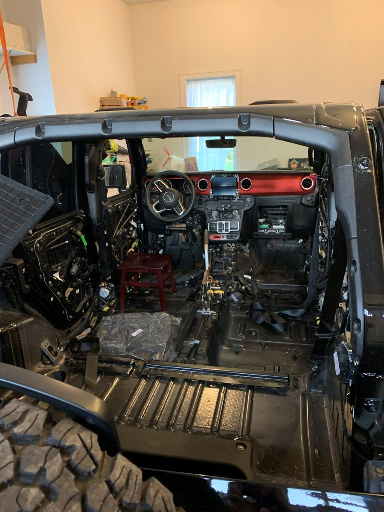
Interior stripped during the rebuild.
Completed a full engine and transmission swap with electrical rewiring on a flood-damaged vehicle.
Independently diagnosed and repaired the emergency brake.